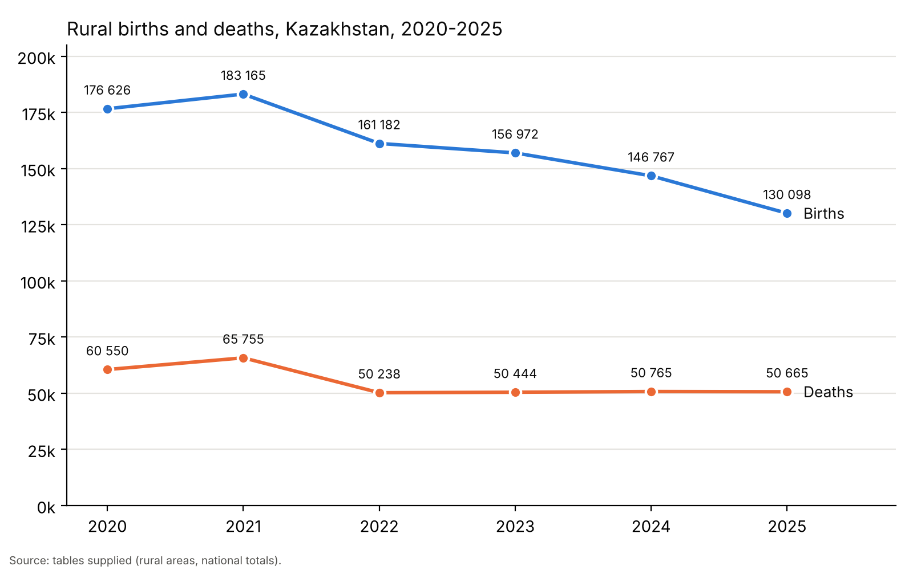
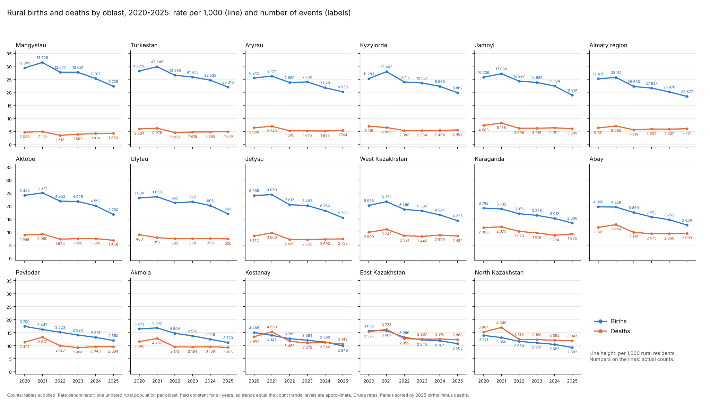

In 60 seconds
Rural Kazakhstan has 19.7 physicians per 10,000 people against 53.0 in cities. Between 2019 and 2023 about 86% of new doctors went to cities, and incentives have not moved the rural share. See the problem
A state-funded AI decision-support tool for rural clinics: guideline advice, image checks and paperwork help for doctors and nurses. The clinician always decides. Based on Ethiopia’s HEP Assist and India’s TB X-ray screening. See the proposal
Yes, but only if six conditions hold. The environmental cost is small; the economic, labour and governance costs are not. If AI becomes a cheaper substitute for recruiting doctors, the answer is no. See the bill · the verdict
Section 1
The problem: where health workers work
Access to healthcare in rural Kazakhstan is limited, and the main reason is not the overall number of medical workers but where they work.
About 7.38 million people, roughly 36% of the population, live in rural areas[20]. Yet in 2023 only 16.9% of the country’s doctors worked there. The overall workforce is growing. Between 2019 and 2023 the number of doctors rose from 74,046 to 81,285, and the number of mid-level medical personnel from 179,837 to 190,644[19]. The growth went almost entirely to cities. Urban areas gained 6,259 doctors and rural areas only 980, so about 86% of new doctors went to cities. The rural share of doctors did not improve: it was 17.2% in 2019 and 16.9% in 2023[19].
Figure 1. Where the 2019–2023 growth went
Own calculation: 2023 minus 2019 from Table 1 (data from Demushkan, 2024[19]). Both groups share one scale; the longest bar is 7,118 (70% of the track, to leave room for labels). Rural doctors received 13.5% of the increase in doctors; rural mid-level staff received 34.1% of the increase in mid-level staff.
Try it: how much of the workforce is rural?
Own calculation from Table 1 (data from Demushkan, 2024[19]). Drag the slider and watch the rural share of doctors barely move, while the rural share of mid-level staff stays near 29%.
Read more: the tables, the 2026 shortage, graduates and what the state has tried
Table 1. Medical workforce by location, 2019–2023
| Year | 2019 | 2020 | 2021 | 2022 | 2023 |
|---|---|---|---|---|---|
| Doctors, rural | 12,736 | 13,365 | 13,395 | 13,480 | 13,716 |
| Doctors, urban | 61,310 | 63,078 | 64,832 | 65,781 | 67,569 |
| Doctors, total | 74,046 | 76,443 | 78,227 | 79,261 | 81,285 |
| Mid-level personnel, rural | 51,298 | 54,095 | 54,371 | 55,504 | 54,987 |
| Mid-level personnel, urban | 128,539 | 131,662 | 134,429 | 135,798 | 135,657 |
| Mid-level personnel, total | 179,837 | 185,757 | 188,800 | 191,302 | 190,644 |
Source: Demushkan (2024)[19]. Rural doctors’ share: 12,736 / 74,046 = 17.2% (2019); 13,716 / 81,285 = 16.9% (2023).
Shortages also persist, and they are being closed unevenly. Between 2021 and 2023 the shortage of doctors in urban areas fell by 35% (from 5,728 to 3,742), but in rural areas by only 17% (from 1,344 to 1,122). For mid-level personnel the urban shortage fell by 40% and the rural shortage by 19%. Rural areas therefore make up a growing share of the remaining shortage: 23% of the doctor shortage in 2023, up from 19% in 2021[19].
Table 2. Staff shortage (deficit) by location, 2021–2023
| Year | 2021 | 2022 | 2023 |
|---|---|---|---|
| Doctors, rural | 1,344 | 1,424 | 1,122 |
| Doctors, urban | 5,728 | 4,903 | 3,742 |
| Doctors, total | 7,072 | 6,327 | 4,864 |
| Mid-level personnel, rural | 1,139 | 1,220 | 926 |
| Mid-level personnel, urban | 6,468 | 5,372 | 3,894 |
| Mid-level personnel, total | 7,606 | 6,592 | 4,820 |
Source: Demushkan (2024)[19]. Rural doctors’ share of the doctor shortage: 1,344 / 7,072 = 19.0% (2021); 1,122 / 4,864 = 23.1% (2023).
Data for January 2026 count full-time positions, so they are not directly comparable with the 2023 figures. They show a shortage of 23,161 positions for doctors and 22,649 for mid-level personnel, despite a workforce of about 86,500 doctors and 189,500 mid-level staff[21]. The gap is visible in everyday access. The availability of doctors for the rural population is 2.7 times lower than for the urban population[22]. Rural areas need more than 3,000 specialists, especially general practitioners, obstetricians and radiologists, and residents of remote villages may travel 40–70 km to reach a doctor, longer in winter[23].
Part of the explanation lies in the choices of young specialists. In 2023, 348 medical graduates started work in Almaty and 356 in Astana. More graduates went to villages than to cities in only five regions: Turkistan, Kyzylorda, Jambyl, Almaty and Akmola. In Aktobe region, 16 graduates began work in villages and 90 in cities[19].
The state has responded mainly with infrastructure and incentives. Under the national project “Modernization of Rural Healthcare”, 655 primary healthcare facilities were planned and built[24]. The number of doctors receiving social support (housing, relocation allowances and compensation for utility costs) rose from 263 in 2023 to 796 in 2024 and 1,760 in 2025, a 6.7-fold increase[21]. Yet the rural share of doctors has not moved.
The social-science question
How might mechanisms be restructured so that rural residents gain genuine access to medical care?
The core issue is an inequality of access, driven by institutional factors. Those who suffer most are the people with the fewest options to travel to a city for treatment.
Read more: why institutions matter
Healthcare professionals are a labour resource, and the conditions of their employment are shaped by institutions: how the state allocates university graduates and compensates their labour; the geographic concentration of hospitals; the availability of professional training and career advancement in large cities; and the system of financial incentives. If these institutions make working in a city more attractive, then the presence of facilities or the offer of bonuses in rural areas will not, by itself, draw doctors there.
Section 2
Background and data: what is measured, and what is not
Four kinds of bodies measure this issue. The Bureau of National Statistics counts people: births, deaths and population by region and by urban or rural residence[26][27]. The Ministry of Health counts supply: physicians per 10,000 people and rural facilities in its statistical compendium[25], and shortages in its press releases[21]. The Kazakh School of Public Health workforce analysis gives trends by location[19]. WHO sets the benchmark of 44.5 health workers per 10,000 people[28], counting physicians, nurses and midwives. Researchers interpret these numbers, for example Jobalayeva et al.[2].
Demand: rural births outnumber deaths
The number of rural births has declined each year since 2021 (statistics for 2020–2025), while the number of rural deaths has barely changed since 2022, at a little above 50,000 a year[26].
Figure 2. Rural births and deaths, Kazakhstan, 2020–2025

Source: Bureau of National Statistics[26], rural areas, national totals.
Read more: births and deaths in each oblast (text and Figure 3)
Despite the fall in births, births still exceed deaths in every region except Kostanay, East Kazakhstan and North Kazakhstan. The gap in favour of births is largest in Mangystau, Turkistan, Atyrau, Kyzylorda, Jambyl, Aktobe, Ulytau and Jetysu; other regions have smaller gaps[26]. So falling births in general does not mean a dramatic fall in every rural region. This agrees with Jobalayeva et al.[2] (p. 7): “Despite the continuous outflow of people to urban areas, the number of rural inhabitants has increased due to high birth rates among the rural population, leading to a decline in the density of healthcare facilities.” More people need more doctors and hospital places.
Figure 3. Rural births and deaths by oblast, 2020–2025

Lines show rate per 1,000 rural residents; labels show actual counts. The rate uses one undated rural population per oblast held constant across years, so trends equal the count trends and levels are approximate. Source: Bureau of National Statistics[26].
Supply: fewer physicians and fewer facilities
Every oblast has far fewer physicians per 10,000 rural residents than per 10,000 urban residents. Nationally the rural rate is 19.7 against 53.0, a gap of 2.7 times[25].
Read more: the WHO benchmark and what the compendium counts
WHO’s threshold is 44.5 health workers per 10,000 people, enough for high coverage of the health-related Sustainable Development Goals[28]; “health workers” here means physicians, nurses and midwives[2]. The Ministry’s compendium publishes physicians only, so the benchmark cannot be checked directly against it. What it does show is that every oblast has far fewer physicians per 10,000 rural residents than per 10,000 urban residents. Nationally the rural rate is 19.7 against 53.0, a gap of 2.7 times[25]. The problem lies in distribution between rural and urban areas.
Figure 4. Physicians per 10,000 residents, rural vs urban, by oblast, 2025
Tap or hover a row to compare. Kazakhstan overall: 19.7 rural against 53.0 urban per 10,000, a gap of 2.7 times.
Physicians of all specialties, excluding dentists. Source: Ministry of Health statistical compendium 2024–2025, Table 20, p. 215[25]. Mid-level staff are not published by urban and rural location.
Rural facilities are also spread unevenly. Turkistan and Almaty regions have the largest rural populations but fewer facilities per head than most regions[27].
Read more: how the facility figures were calculated
Rural facilities are also spread unevenly. Using rural population by region[27] and the number of medical organisations in rural districts (compendium, p. 196[25]), the number of facilities per 10,000 rural residents was calculated for 2025. Turkistan and Almaty regions have the largest rural populations (1,612,638 and 1,257,238 people) but fewer outpatient clinics, family medical clinics, feldsher-midwife stations and medical posts per head than most regions. Ulytau had fewer than 50,000 rural residents the year before[27].
Figure 5. Rural health facilities per 10,000 rural inhabitants, by region, 2025
Tap or hover a row to see the split. Kazakhstan overall: 1.9 clinics + 4.7 feldsher-midwife stations and posts = 6.7 per 10,000 rural inhabitants.
Own calculation from counts of facilities[25] and rural population[27]. Counts of sites, not staff or distance. Totals are as published in the table, so they can differ by 0.1 from the sum of the two parts because of rounding. For Mangystau the table gives only the total (1.2).
Taken together, people in rural areas still do not have enough health workers, facilities are distributed unevenly, and rural areas with dense populations lack enough clinics and posts. Rural access stays low even though hospitals have been modernised and social support for doctors has grown. Because births exceed deaths in most regions, rural populations still grow naturally even as births fall.
Where the data are silent
Elderly people and people with disabilities visit hospitals most often and need physically accessible clinics, yet the official statistics do not show them.
How far the numbers can be trusted
The counts can be trusted because official bodies produce them. They cannot show the whole picture of access, because they lack the information listed above. A region with more clinics and posts per 10,000 rural residents, such as North Kazakhstan, does not necessarily give people better access than Mangystau, which has the fewest facilities. Two further limits matter: the January 2026 shortage counts full-time positions while the 2023 report counts people, so the two cannot be compared; and the physicians-only compendium cannot be set against WHO’s benchmark that includes nurses and midwives.
Section 3
Current state of research
Research on health workers in rural Kazakhstan falls into three approaches: assessing staff shortages; examining strategies for recruiting and retaining personnel; and analysing delivery models that use limited human resources more efficiently. These areas rarely overlap, and none of the sources reviewed addresses artificial intelligence. Most focus on Kazakhstan, with regional and global comparisons.
The shortage: facilities, staff and where they are
- Rural facilities fell between 2004 and 2022, lowest in the south and west[2]
- In 2017 rural areas had 14.47 doctors per 10,000 against 43.71 in urban regions[11]
- Medicine supply is 30% lower in rural areas, and about 69% of rural residents self-medicate[13]
Read the full review
Jobalayeva et al.[2] studied facility numbers for 2004–2022 and found a general reduction of outpatient and inpatient facilities in rural areas, lowest in the south and west, and expect the trend to continue with rural population growth. Shayakhmetov et al.[6] (p. 398) describe low staffing and ineffective rural health care that “requires radical structural and functional restructuring”. Haruna et al.[5] note that despite a 76% universal health coverage index, rural access is limited.
Shaltynov et al.[11] used the Gini coefficient for 2002–2023: in 2017 rural areas had 14.47 doctors per 10,000 against 43.71 in urban regions, and western and southern regions have fewer staff and beds. Spankulova et al.[13] (survey of 1,673 people) report medicine supply 30% lower in rural areas, around 69% of rural residents relying on self-medication, and about 44% travelling to urban regions for care. Mseke et al.[16] show that travel time is a key measure of access.
Recruiting and retaining: do the mechanisms work?
- The 2009 incentive scheme did little, partly because of tenge devaluation[1]
- Support is described as non-transparent, with unattractive vacancies[3]; Thailand paid salaries 2–7 times higher[7]
- Kyrgyzstan added a compulsory rural year[10], yet only 8% of Almaty students want village work[14]
Read the full review
Jobalayeva et al.[1] report that the 2009 incentive scheme (housing loan and one-off allowance) did little to raise rural staff numbers, partly because of tenge devaluation. Malbekova et al.[3] find social support far from ideal, citing lack of transparency and unattractive vacancies, and describe richer packages in Germany, Italy and France. Strasser et al.[7] report that Thailand raised rural physician numbers sharply with salaries 2–7 times higher than usual. Baimuratova et al.[4] (p. 110) call for “integrated workforce policies, social support, organizational redesign, intersectoral collaboration, telemedicine, and patient-oriented digital services”. WHO[9] recommends action on education, finance, personal and professional support, and regulation.
Haruna et al.[5] and Fonken et al.[10] describe Kyrgyzstan, where community initiatives, a compulsory year of rural training from 2017, higher salaries, internet and housing improved rural access. These changes matter because in an Almaty survey only 8% of students wanted to work in villages[14].
Delivery models: community programmes, mobile clinics, telemedicine
- Community programmes, outreach and mobile clinics, and empanelment are the main options[8]
- Telemedicine is recommended for Kazakhstan[2][4]
- Mobile communication (calls, texts, apps) can widen access[5]
Read the full review
This literature offers ways to widen access even if shortages remain. Gizaw et al.[8] list community health programmes, student-led services, school-based services, outreach and mobile clinics, family health programmes, empanelment, community health funding and work with non-profit private providers. Telemedicine appears repeatedly: Jobalayeva et al.[2] say it should be used in Kazakhstan, and Baimuratova et al.[4] (p. 119) see “significant potential to improve continuity, efficiency, and equity of access”, especially in countries with large territories and uneven population distribution. Haruna et al.[5] argue mobile communication (calls, texts, video, apps) can expand access.
The gap this project speaks to
Incentive schemes and social support have not removed unequal access in Kazakhstan. Community initiatives, higher wages, housing, cars and better living conditions improved rural access elsewhere in the region and the world, and telemedicine and outreach clinics are proposed too. It is still contested whether these would work here: Kazakhstani students prefer urban work, so financial incentives may only work as part of a well-organised system, and it is unclear that such a system is achievable.
No research studies AI-based tools that could support the recruitment, retention or distribution of human resources as rural needs fluctuate. Digital tools in Kazakhstan also raise institutional problems, such as reimbursement mechanisms and staff workload. This project therefore proposes to build such mechanisms with AI, to strengthen the few professionals who remain in rural areas.
Section 4 · The solution
An AI-assisted rural healthcare support system
A state-funded, AI-based platform for clinical decision support, installed in rural primary healthcare facilities. It would help doctors and nurses make better-informed decisions, improve diagnostic capacity and serve more patients despite the shortage of staff. It supports health workers; it does not decide.
The proposed flow. The system supports health workers; the clinician keeps the final decision.
Decision support, not a doctor
It recommends actions based on national medical guidelines, patient symptoms, medical histories and test results, and helps staff judge whether further tests or a referral to a specialist are needed.
Three jobs
Guideline advice; analysis of medical images that flags possible abnormalities for a clinician to review (a second reader, not a replacement for a specialist); and administrative work such as documentation and record management, which frees time for patients.
The Ministry, with vendors
The Ministry of Healthcare would run it with medical centres across the country and technology providers. The Ministry of AI and Digital Development could be responsible for the technology side.
Rural doctors and nurses
Staff in hospitals, clinics and medical posts in rural areas that serve populations with limited access to specialists, and through them the rural patients.
Two documented cases elsewhere
HEP Assist, an AI clinical advisor
What was built. Ethiopia’s Ministry of Health and the non-profit Last Mile Health built an AI-powered clinical advisor, the Health Extension Program (HEP) Assist tool, so health extension workers can quickly reach trained professionals using AI assistance. It draws on more than 100 Ministry of Health training manuals and guidelines.
What it achieved. It is used in five regions of Ethiopia, where one worker serves around 2,500 patients. In the evaluation questionnaire, medical accuracy was about 83%, above the target[42].
AI chest X-ray screening for tuberculosis
What was built. An AI tool reads chest X-rays and flags abnormalities related to tuberculosis. In Nagpur it ran in eight private laboratories alongside radiologists[17]. A later prospective study applied AI screening to a high-risk tribal population in Chhattisgarh[18].
What it achieved. In Nagpur, 2,303 of 8,303 patients read by both a radiologist and the AI were flagged, and about 15.8% of the overall TB yield could be attributed to the AI[17]. In Chhattisgarh, 44.63% of patients flagged by the AI were later confirmed to have TB, which is the share of flagged cases confirmed and not the tool’s sensitivity. The authors add that AI may detect people with asymptomatic disease who would otherwise be missed or diagnosed late[18].
Because such initiatives are already running, a decision-support system in Kazakhstan’s rural clinics may work too, if it is priced and governed honestly.
Section 4 · The bill
What it would cost
RURAL CARE SYSTEM
ITEMISED BILL · PILOT IN 2–3 REGIONS
1. ENVIRONMENTALabout 26 MWh a year, on a grid already shortLOW (1 out of 5)
EVIDENCE
Any single request uses little energy, but the electricity is not clean. Kazakhstan’s grid relies on coal: in 2025 coal-fired thermal plants produced 75% of electricity in the Unified Energy System[29], and renewables excluding large hydro supplied 7%[30]. “Kazakhstan’s power plants generated a record 123.1 billion kilowatt-hours in 2025. Consumption, however, reached 124.6 billion kilowatt-hours. The country therefore used approximately 1.5 billion kilowatt-hours more than it produced”[31]. The system would add demand. AI’s electricity use is expected to roughly double by 2030, yet data centres used 415 TWh in 2024, only 1.5% of electricity worldwide[32].
- Rural residents: 7,380,000. Assume the AI is used in 3 of their 6 primary-care visits a year, with about 5 requests per visit.
- Requests per year: 7,380,000 × 3 × 5 ≈ 110 million.
- Electricity: 110,000,000 × 0.24 Wh ≈ 26 MWh a year, which is about 0.00002% of the 123.1 TWh generated in 2025.
- Water: 110,000,000 × 0.26 mL ≈ 29,000 litres a year.
Try your own assumptions
Uses 7,380,000 rural residents, 0.24 Wh and 0.26 mL per median request[33]. The first slider setting reproduces the estimate above (the text rounds 110.7 million to 110 million). Even at 20 times Google’s figure the energy stays tiny against national generation, but this counts requests only, not the servers that run all day.
Google’s figures describe highly optimised hyperscale data centres, so a typical facility could use several times more. The estimate also covers only the requests, not the servers that run continuously or the equipment needed in rural facilities, so the real footprint would be larger. Nationally the environmental cost is minor. It is not zero, and it falls on an energy system with no reserve capacity for cleaner generation.
2. ECONOMICtaxpayers pay, vendors profitHIGH (4 out of 5)
EVIDENCE
What it costs. Developing or licensing the software, adapting it to national clinical protocols in Kazakh and Russian, server capacity, equipment for rural facilities, connectivity, staff training, cybersecurity, independent auditing, and regular retraining and maintenance of the model.
Some of this is already funded elsewhere. Of 6,256 villages in Kazakhstan, 2,606 already have optical infrastructure and another 3,039 will be covered under an investment agreement with JSC Kazakhtelecom[34]. Until that is finished, the system must run in autonomous mode in unconnected villages, which raises costs.
Who pays and who profits. The state budget and the Compulsory Social Health Insurance fund would pay, so taxpayers pay. Who profits is less comfortable. Kazakhstan already uses private AI products in healthcare: ALIMA, an AI medical assistant that processes complaints, records and images to suggest diagnoses, exams and treatment plans, operates in over 700 clinics, and WDsoft assists early detection of cancer and pneumonia in 190 facilities in 10 regions[35]. A national system would most likely be built by contracting such vendors, so the winners would be software companies and the operators of state data centres. Rural patients benefit only if the system works in their villages.
Opportunity cost. The same money could expand social support for rural physicians, which grew from 263 recipients in 2023 to 1,760 in 2025[21]. Every tenge spent on software is not spent on housing subsidies or relocation payments, the payments that address why graduates do not move to villages.
3. LABOURnew work, hidden labelling, replacement riskHIGH (4 out of 5)
EVIDENCE
Health workers would get less paperwork and help with diagnostic results, but would take on new work: entering data, checking AI recommendations and learning the system. Some administrative roles could become unnecessary. Radiologists in cities may be asked to review AI-flagged images remotely, work for which they are not paid.
Government could also use AI as a pretext to leave more than 3,000 rural vacancies unfilled[23]. A tool meant to support staff would then quietly replace them, and the system would make the staffing shortage permanent instead of easing it.
Hidden labour. Training and testing medical AI needs labelled X-rays, records and symptom descriptions. If doctors in Kazakhstan do the labelling, it takes time from patients. If it is outsourced, it joins a global supply chain that is often exploitative: in Kenya, data workers receive extremely low pay and often face unpaid wages and unresolved disputes[12].
4. GOVERNANCEhigh-risk AI, data localisation, breach recordHIGH (5 out of 5)
EVIDENCE
The legal framework now exists. On 17 November 2025 the President signed Law No. 230-VIII “On Artificial Intelligence”, which sets principles of security, transparency and accountability and classifies systems by risk. High-risk systems are those whose malfunction or cessation could cause a social or man-made emergency or significant negative consequences for users[36]. A system that influences diagnoses and referrals to specialists should be classed as high-risk. The law also distinguishes levels of autonomy: at a low level a human makes every final decision; at an intermediate level the system decides but a human can adjust or overturn it[37]. This proposal must stay at the low level. That fits the law’s principle of the primacy of the human being, their rights, freedoms and well-being[38], and WHO’s 2021 guidance on the ethics and governance of AI for health, which puts protecting human autonomy and ensuring accountability first[39].
Data localisation. Under Article 12 of the Personal Data Law, personal data must be stored in a database located in Kazakhstan[40]. That rules out sending patient records to foreign cloud AI services and in practice requires state-owned infrastructure. Localisation protects data from foreign companies but concentrates it in the state. The same ministry would develop, host and regulate the system, a conflict of interest unless an independent body oversees it.
Surveillance and misuse. Health records linked to individual identification numbers (IIN) are valuable to insurers, employers and law enforcement, and Kazakhstan’s record on data security is weak. In summer 2025 the government confirmed the largest data breach in its history, exposing the personal information of over 16 million people, more than three-quarters of the population[41]. A national database of rural diagnoses would be an attractive new target.
5. DATA ETHICSconsent, bias, errors, function creepHIGH (4 out of 5)
EVIDENCE
The system needs data on symptoms, medical histories, test results and medical images, and training and evaluating it needs large historical datasets of Kazakhstani patients. Under personal data law, using such information requires informed consent. In a rural clinic that is harder than it looks: many patients are elderly, some lack digital literacy, others prefer Kazakh while documentation is kept in Russian, and a patient who travelled 40–70 km to see the only specialist in the district has no practical chance to decline.
What could go wrong
Bias. Most digitised medical data comes from large urban hospitals in Almaty and Astana, so accuracy may be lower for rural residents. Official statistics hold almost nothing on elderly people or people with disabilities, the groups that most need care and about whom the model knows least.
Errors. HEP Assist reached about 83% accuracy in its evaluation, which was judged a success[42]. In a rural setting with no other specialist, the remaining answers that are wrong may go uncorrected.
Blind trust and function creep. An overworked staff member might accept an AI recommendation without checking it. If harm follows, it is unclear who is responsible: the employee, the developer or the ministry. “Function creep” means data collected for care is later used to check insurance claims, assist law enforcement or train commercial models, without patients’ consent.
PAID BY: taxpayers (state budget and the Compulsory Social Health Insurance fund)
PROFITS: software vendors and state data-centre operators
VERDICT: PROCEED ONLY IF 6 CONDITIONS HOLD →1 segment = low cost, 5 = high. Ratings are the author’s judgement from the evidence in each line. Tap a line to open its evidence.
KEEP THIS RECEIPT
Section 4 · Verdict
Yes, but only under strict conditions
The environmental cost is small. The economic, labour and governance costs are not.
The main danger is that AI becomes a cheaper substitute for recruiting doctors. If the system is used to justify leaving rural posts empty, it will make the access problem worse, and the answer should be no. Kazakhstan should proceed only if all of the following hold.
Tick each condition you think can be guaranteed.
- Funding stays separate. AI spending does not come out of the social-support budget, and rural staffing levels are not reduced because the system exists.
- High risk, low autonomy. The system is registered as high-risk under Law No. 230-VIII and kept at low autonomy. The clinician decides, and patients are told when AI is used.
- Data is minimised and kept under local control. Data is not reused for training or any other purpose without separate consent.
- Independent oversight. A body other than the ministry that runs the system audits it.
- Rural staff are paid for the new work. This covers data entry, correcting the AI and training time, and any labelling is done under fair contracts.
- Evaluate before building. Start with a pilot in two or three regions, for example Turkistan, which has a large rural population, and Aktobe, which has a large urban–rural gap.
If these conditions cannot be guaranteed, the money is better spent on housing, salaries and transport for rural medical workers. That approach has clearer evidence behind it.
AI transparency statement
How AI was used in this project
I used Claude (Anthropic) for this assignment. I chose the topic, the research question and the proposal, and I am responsible for every claim and number on this page. The full record is in my exported AI Process Log.
Claude made the figures in this work and did the calculation of the environmental cost. It helped with grouping articles to write the third section. It also searched for and read sources, calculated shares and growth figures from the workforce tables, spotted errors in my drafts, and assembled this website and reference list.
I decided to write about rural healthcare access instead of the topic Claude suggested. I wrote the research question, the proposal for a state-run decision-support system and its case studies. I searched for articles and read them. I supplied the data tables and figures in Sections 1 and 2 and checked the key figures against their sources.
I accepted the cases of the fourth section: the Ethiopia HEP Assist tool and the India tuberculosis X-ray screening. I also accepted Claude’s figures and calculations.
I rejected Claude’s suggested topic (pollution in Almaty) because I wanted to write about rural healthcare access. I did not use some references that Claude offered me because they could not be opened, which means I could not verify them. I rejected Claude’s suggestion to differentiate between Russian- and Kazakh-speaking patients in the independent oversight condition, since information about all individuals should be kept in one place.
References
Sources
A number in square brackets in the text, such as [19], links to the matching source below.
Show all 42 references
- [1]Jobalayeva B, Khismetova Z, Glushkova N, et al. The impact of incentive scheme on rural healthcare workforce availability: a case study of Kazakhstan. Human Resources for Health. 2024;22:23. https://doi.org/10.1186/s12960-024-00905-0
- [2]Jobalayeva B, Glushkova N, Khismetova Z, et al. Past, current status, and future trends of the rural healthcare network in the Republic of Kazakhstan. Scientific Reports. 2025;15:26913. https://doi.org/10.1038/s41598-025-11432-w
- [3]Malbekova D, Demushkan O, Kassymova A, et al. Social support of young medical personnel in the conditions of sustainable development of rural areas of Kazakhstan. BIO Web of Conferences. 2023;65:05012. https://doi.org/10.1051/bioconf/20236505012
- [4]Baimuratova MA, Turzhanova BA, Zakiolda A, et al. Accessibility and quality of medical care as indicators of health system sustainability: a literature review. Public Health (Kazakhstan). 2026;(1):76–89. https://doi.org/10.24412/1609-8692-2026-1-76-89
- [5]Haruna UA, Oladunni AA, Abdulkadir AK, et al. Towards attaining universal health coverage in Kazakhstan: challenges and important next steps. Health Promotion Perspectives. 2025;15(1):3–8. https://doi.org/10.34172/hpp.025.43529
- [6]Shayakhmetov, S., Kurakbaev, K. K., Toguzbaeva, K. K., & Ismailova, A. A. (2020). Risk assessment and management of rural health in Kazakhstan. Vestnik Kazakhskogo natsional’nogo meditsinskogo universiteta [Вестник Казахского национального медицинского университета], (4), 398–402.
- [7]Strasser R, Kam SM, Regalado SM. Rural health care access and policy in developing countries. Annual Review of Public Health. 2016;37:395–412. https://doi.org/10.1146/annurev-publhealth-032315-021507
- [8]Gizaw Z, Astale T, Kassie GM. What improves access to primary healthcare services in rural communities? A systematic review. BMC Primary Care. 2022;23:313. https://doi.org/10.1186/s12875-022-01919-0
- [9]World Health Organization. Increasing access to health workers in remote and rural areas through improved retention: global policy recommendations. Geneva: WHO; 2010.
- [10]Fonken P, Bolotskikh I, Pirnazarova GF, Sulaimanova G, Talapbek kyzy S, Toktogulova A. Keys to expanding the rural healthcare workforce in Kyrgyzstan. Frontiers in Public Health. 2020;8:447. https://doi.org/10.3389/fpubh.2020.00447
- [11]Shaltynov A, Abenova M, Baibussinova A, et al. Inequality in the distribution and utilization of healthcare resources in Kazakhstan (2002–2023): a spatiotemporal analysis. International Journal of Environmental Research and Public Health. 2025;22:1762. https://doi.org/10.3390/ijerph22111762
- [12]Computer Weekly. Kenyan AI workers form Data Labelers Association. 2025. https://www.computerweekly.com/news/366619321/Kenyan-AI-workers-form-Data-Labelers-Association
- [13]Spankulova L, Chulanova Z, Konyrbay A. Availability and quality of medical services in Kazakhstan: the urban-rural context. Eurasian Journal of Economic and Business Studies. 2024;68(2):5–19. https://doi.org/10.47703/ejebs.v68i2.376
- [14]Faizullina K, Kausova G, Kalmataeva Z, Nurbakyt A, Buzdaeva S. Career intentions and dropout causes among medical students in Kazakhstan. Medicina (Kaunas). 2013;49(6):284–90.
- [15]Rechel B, Sydykova A, Moldoisaeva S, et al. Primary care reforms in Central Asia: on the path to universal health coverage? Health Policy OPEN. 2023;5:100110. https://doi.org/10.1016/j.hpopen.2023.100110
- [16]Mseke EP, Jessup B, Barnett T. Impact of distance and/or travel time on healthcare service access in rural and remote areas: a scoping review. Journal of Transport & Health. 2024;37:101819. https://doi.org/10.1016/j.jth.2024.101819
- [17]Vijayan S, Jondhale V, Pande T, Khan A, Brouwer M, Hegde A, et al. Implementing a chest X-ray artificial intelligence tool to enhance tuberculosis screening in India: lessons learned. PLOS Digital Health. 2023;2(12):e0000404. https://doi.org/10.1371/journal.pdig.0000404
- [18]Gupta A, Nair AM, Ekka S, Gahwai D, Sharma N, Raza Khan F, et al. Evaluating the usefulness of artificial intelligence-based chest X-ray screening in improving tuberculosis detection among the high-risk tribal population of Chhattisgarh, India: a prospective multi-centre study. Open Forum Infectious Diseases. 2026;13(1):ofaf780. Oxford University Press.
- [19]Demushkan O. (2024). Анализ кадровой обеспеченности отрасли здравоохранения Республики Казахстан [Analysis of healthcare workforce availability in the Republic of Kazakhstan]. National Scientific Center for Healthcare Development named after Salidat Kairbekova. ksph.edu.kz (PDF)
- [20]Bureau of National Statistics of the Agency for Strategic Planning and Reforms of the Republic of Kazakhstan. (n.d.). Official website. https://stat.gov.kz/ru/
- [21]Ministry of Healthcare of the Republic of Kazakhstan. (2026, June 17). SUR 2.0: The Ministry of Healthcare gives one month to update healthcare workforce data. https://www.gov.kz/org/dsm/press/news/details/1242801?lang=ru
- [22]24KZ. (2026, August 6). How many healthcare workers are there in Kazakhstan. https://24.kz/ru/news/zdravookhranenie/784161-skolko-medrabotnikov-v-kazakhstane
- [23]Arbat Media. (2025, October 25). Healthcare in rural Kazakhstan: The struggle for accessibility, personnel, and technology. https://arbatmedia.kz/article/medicina-v-selax-kazaxstana-borba-za-dostupnost-kadry-i-texnologii-6695
- [24]Ministry of Healthcare of the Republic of Kazakhstan. (2025). 473 healthcare facilities built in Kazakhstan’s villages. https://www.gov.kz/org/dsm/press/news/details/1016808?lang=ru
- [25]Ministry of Healthcare of the Republic of Kazakhstan, National Research Center for Health Development. Statistical compendium 2024–2025 (Table 20, p. 215; rural facilities, p. 196). nrchd.kz (PDF)
- [26]Bureau of National Statistics. Demography publication on births and deaths, 2020–2025. https://stat.gov.kz/ru/industries/social-statistics/demography/publications/281538/
- [27]Bureau of National Statistics. Demography publication on rural population by region. https://stat.gov.kz/ru/industries/social-statistics/demography/publications/281166/
- [28]World Health Organization. Health workforce, background paper for the Global Conference on Primary Health Care (44.5 health workers per 10,000 people, p. 6). https://www.who.int/docs/default-source/primary-health-care-conference/workforce.pdf
- [29]Samruk-Energy. Annual report 2025, market review. https://ar2025.samruk-energy.kz/en/index/market-review.html
- [30]Bureau of National Statistics. Energy statistics publication. https://stat.gov.kz/en/industries/business-statistics/stat-energy/publications/509810/
- [31]Orda. (2026). Kazakhstan’s power deficit complicates its AI ambitions. https://en.orda.kz/kazakhstans-power-deficit-complicates-its-ai-ambitions-10990/
- [32]International Energy Agency. (2025). Energy and AI, executive summary. https://www.iea.org/reports/energy-and-ai/executive-summary
- [33]DatacenterDynamics. Google: median Gemini prompt uses 0.24 watt-hours of power and consumes 0.26 ml of water. https://www.datacenterdynamics.com/en/news/google-median-gemini-prompt-uses-024-watt-hours-of-power-and-consumes-026ml-of-water/
- [34]El.kz. Kazakhstan to allocate 84 bln tenge for internet in villages. https://el.kz/en/kazakhstan-to-allocate-84-bln-tenge-for-internet-in-villages_400028054
- [35]The Times of Central Asia. Kazakhstan to expand use of AI for early detection of strokes and cancer (ALIMA, WDsoft). https://timesca.com/kazakhstan-to-expand-use-of-ai-for-early-detection-of-strokes-and-cancer/
- [36]Chambers and Partners. Current issues in artificial intelligence regulation in Kazakhstan. https://chambers.com/articles/current-issues-in-artificial-intelligence-regulation-in-kazakhstan
- [37]Republic of Kazakhstan. Law No. 230-VIII “On Artificial Intelligence” (Adilet legal database). https://old.adilet.zan.kz/eng/docs/Z2500000230
- [38]Tengrinews. New law comes into force in Kazakhstan. https://en.tengrinews.kz/kazakhstan_news/new-law-comes-into-force-in-kazakhstan-270729
- [39]World Health Organization. (2021, 28 June). WHO issues first global report on AI in health and six guiding principles for its design and use. https://www.who.int/news/item/28-06-2021-who-issues-first-global-report-on-ai-in-health-and-six-guiding-principles-for-its-design-and-use
- [40]Government of Kazakhstan, Aqmola region. Law on Personal Data and its Protection, Article 12. https://www.gov.kz/org/aqmola/documents/details/176880?lang=en
- [41]The Times of Central Asia. Kazakhstan considers criminal liability for mass leaks of personal data. https://timesca.com/kazakhstan-considere-criminal-liability-for-mass-leaks-of-personal-data/
- [42]IDinsight. Building an AI-powered clinical advisor to strengthen frontline healthcare in Ethiopia (HEP Assist). https://www.idinsight.org/project/building-an-ai-powered-clinical-advisor-to-strengthen-frontline-healthcare-in-ethiopia/